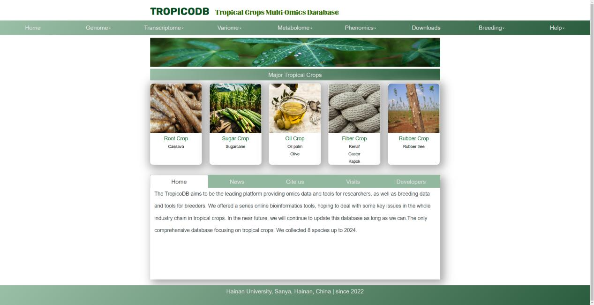
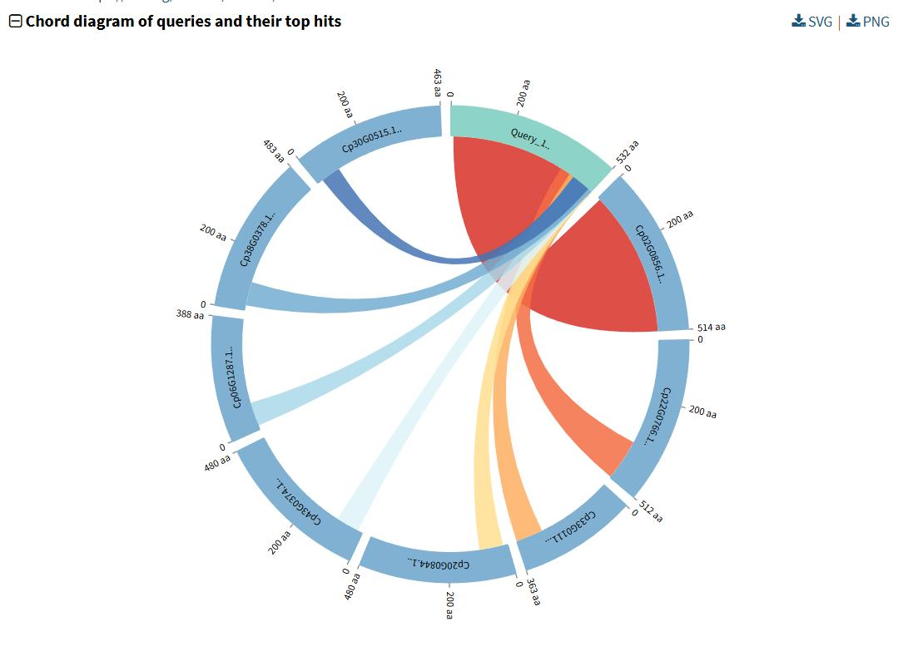
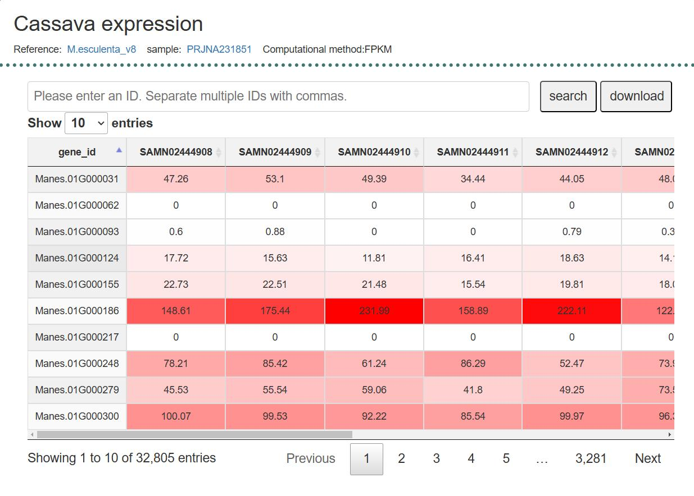
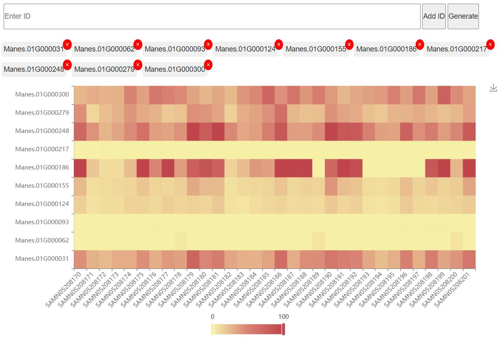
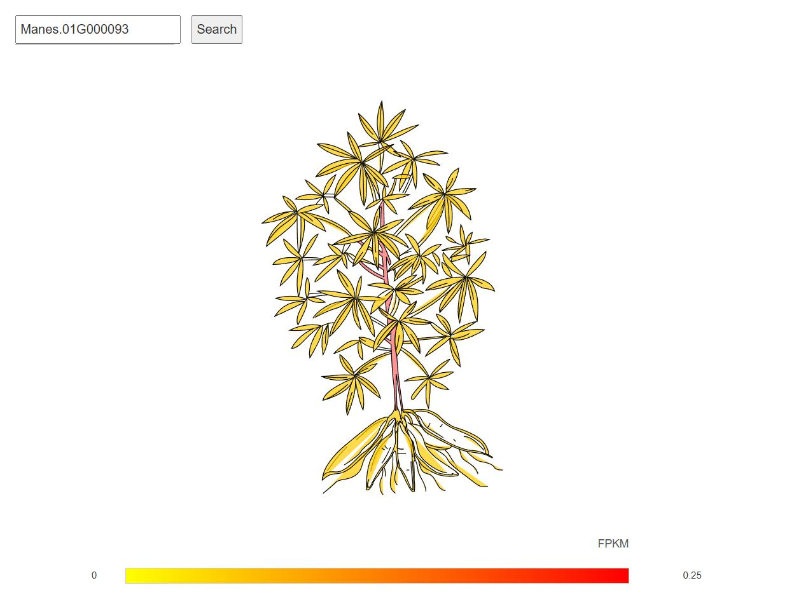
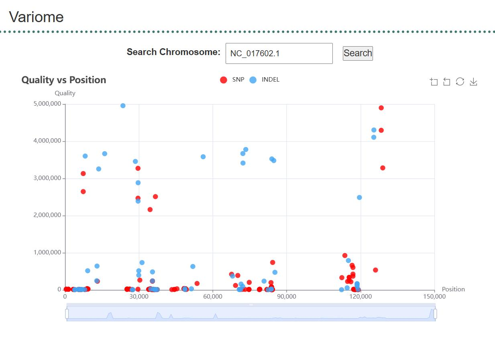
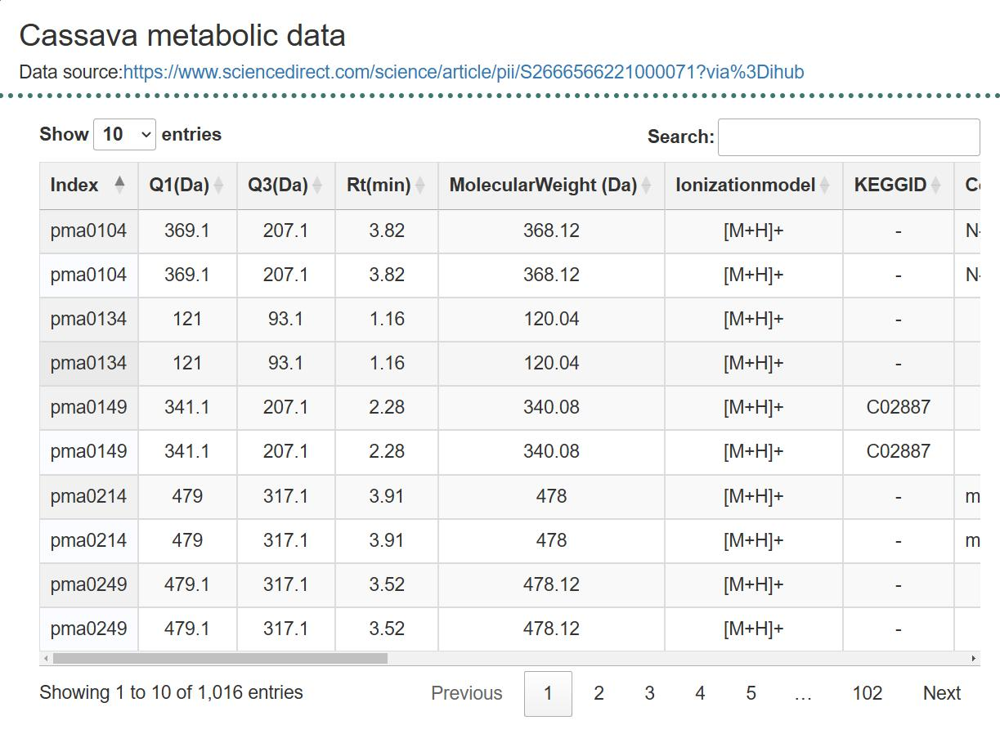
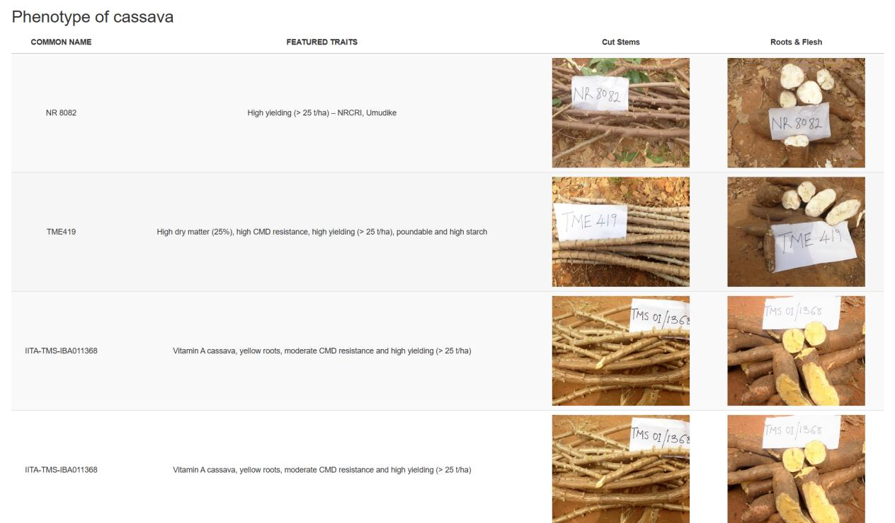
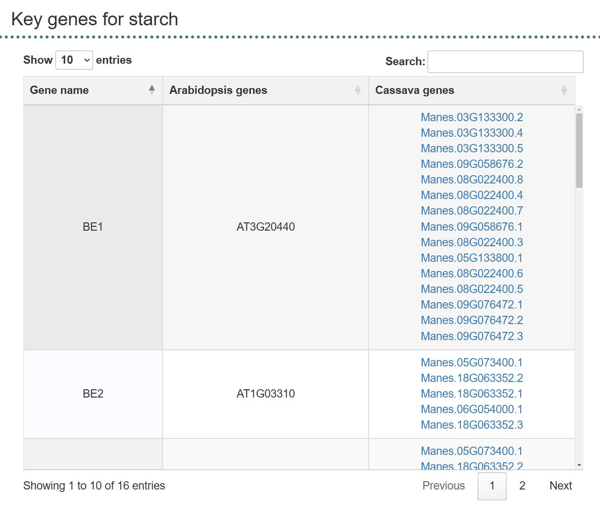

5.Who should I contact if I think I have found a mistake/bug in the database?
13.What data and information does TropDB contain?
14.How can I download data from TropDB?
What is TropDB?
Tropical Crops Genome Database is a genomic database designed for tropical crops. It contains various genomic data and tools for 8 species up to now.
How is TropDB structured?
TropDB uses python and php frameworks to organize back-end programs, using Jquery and Bootstrap front-end frameworks to present information and interact with users. The entire project is deployed using apache.
How do I cite TropDB?
Url for TropDB:https://bioinformatics.hainanu.edu.cn/tropdb/
How can I contact TropDB?
Dr.Fei Chen
Mailing address: No.1, Weigang, Xuanwu District, Nanjing, Jiangsu, China
Postal code: 210032
Who should I contact if I think I have found a mistake/bug in the database?
Please contact administrator via 1123107571@qq.com if you found a mistake/bug!
User Login Interface
Navigation Bar
The navigation bar contains the following options: Home: The main interface. Genome: Hovering over the "Genome" menu will display submenus for species introductions (Cassava, Sugarcane, Oil Palm, Olive, Kenaf, Castor, Kapok, Rubber), along with tools such as Blast, JBrowse, Gene Search, Gene Family Search, and miRNA Search. Transcriptome: Hovering over the "Transcriptome" menu will display a list of species, such as Cassava, Sugarcane, Oil Palm, Kenaf, Rubber, and Efp-gene, along with corresponding expression data under various treatment conditions. Variome: Hovering over the "Variome" menu will display Cassava, Rubber, and Oil Palm as options. Metabolome: Hovering over the "Metabolome" menu will display Cassava, Sugarcane, and Oil Palm options. Phenomics: Hovering over the "Phenomics" menu will display Cassava and Sugarcane options. Download: The download data interface. Breeding: Hovering over the "Breeding" menu will display two tools: Key Gene and Guide RNA. Help: Hovering over the "Help" menu will display FAQ, Contact Us, Conference, and Links options.
Species Classification Modules
Each category includes corresponding species, and each species name is clickable, leading to its introduction page.
Database Introduction
At the bottom of the homepage, you will find a brief description of the database, the news about the database’s inception, our lab's contact information under "Cite Us," and a map under "Visits" showing our location. The "Developer" section includes photos of the developers.
Genome Module
Blast Tool
This feature links to the local Blast page of our lab, with separate protein and nucleic acid Blast databases created for eight species.
Transcriptome Module
Taking cassava as an example, the expression data for various tissues is displayed in a list format. Additionally, a heatmap generation tool is available. Users can enter any gene ID in the search box and click "Generate" to produce a heatmap. The vertical axis lists gene IDs, and the horizontal axis represents sample numbers. Detailed sample information is available by clicking the "Sample" link.
 Example (Cassava): After entering a gene ID in the search box and clicking "Search," the expression data will be displayed in color-coded format. Higher expression values are represented in red.
Variome Module
sing oil palm as an example, entering chromosome numbers in the search box will display the location of data variations along with corresponding values.
Metabolome Module
Taking cassava as an example, metabolic data is presented in a list format.
Phenomics Module
This module primarily displays phenotypic data.
Breeding Module
This interface includes key genes for carbohydrates, oils, and starches.
What data and information does TropDB contain?
Currently, the TropDB contains several search tools and available data for researchers to conduct molecular biology, Genomics,Genetics, Phylogeny study. We also implemented a genomic browser that visualizes genomic data interactively and performed Basic Local Alignment Search Tool. GDS also includes several additional tools for complete data download, relative articles search. This current GDS is Version 1.0, so we will update it continuously and try to ensure it be the leading database for Fragaria genomics.
How can I download data from TropDB?
You can download all the data TropDB containing by the Download page
How can I contribute my data to TropDB?
We welcome all kinds of cooperation research. Contact us if you have any valuable data such as transcriptome, genome.
What is TropDB's future plan?
Our initial plan is to collect more transcriptome data and develop a visualization tool in web page. All the researchers can easily observe the differential expression of genes.In the future, we will develop more useful tool, perform deeper mining of genomics data and make it availiable on our website.